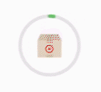

Overview
I refreshed the Target App post order experience, adding new capabilities for users to better track and manage their orders.
While at Target, I spent a 6 month rotation as a Product Designer on the Core iOS Team within Target App UX. The Core iOS Team focuses on pattern and accessibility enhancements for a consistent experience across the Target App. My goal was not only to elevate the app to be on par with the robust features on Target.com, but also to envision fresh mobile interactions and solutions.
Along with my work for post order, I designed improvements to product pages, animated app illustrations, and reimagined the onboarding experience.
Overview of my contributions as a Product Designer for the Target App
Problem context
The business problem
Target had been receiving a high volume of calls to Target Guest Services (TGS), their Customer Service call centers. Users had been calling frequently and wanted to know:
- Where’s my stuff?
- When will it get here?
- How can I make changes to my order?
Each call to TGS costs Target about $15, and the current rate of contacts per order was costing Target millions of dollars.
The goal
Reduce the number of calls to Target Guest Services. Improvements to the post order experience across the organization became the #1 priority for the quarter.
MY POST ORDER REDESIGN GOALS
Increase transparency and clarity, give the user control, and anticipate user needs and concerns.
Process
Problem definition
Synthesizing UX Research
During the first couple weeks, I began to frame and define the problem, going through UserTesting.com insights and synthesizing the UX research that had been compiled.
Competitive Analysis
I also assessed competitors such as Amazon, Walmart, and other online retailers to understand they approached their post order experience and what we could learn from that.
State Mapping
Next, I met with different teams across Target to delineate the journey of an order. These meetings helped me map out over 40 order status states over six different fulfillment methods. Examples of fulfillment methods include shipping to home, store or drive up pickup, and delivery through email.
Design, adjust, and test
Design and iterate
I created mockups in Sketch and received feedback from the UX team during design crits. Throughout this process, I worked closely with a designer on the Android app and kept in close contact with the Product Manager on my team to ensure we were aligned.
Intercept testing
Midway through my iterations, I created an Invision prototype and approached guests in a Target store to test my designs with them and get reactions in-person. Using the feedback, I made a few more tweaks.
Handoff
Nearing the end of the project, I created final specs and documentation using Zeplin and collaborated with the engineers as they gradually began to implement designs over the next couple months.
Designs
The following is a high-level overview of several new capabilities I designed, as well as a few redesigned screens. Everything featured in this case study is currently live on the Target App.
Post order 01
Track orders and view details
Redesign
Order history
Based on the mappings of all states in all fulfillment methods, I created these animated circular order status indicators. These leveraged color and spacing to quickly show the current progress of an order. I crafted the animation to give more visual texture to the statuses and reflect the full order journey.
One of the most common reason for callings was to ask, "Where's my stuff?". I knew it was important to ease any stress the user had about where their order is and if it would be on time. I used color to indicate order status so users could see it at a glance and be reassured that their order was on track. A burnt orange color was used to indicate any delays or actions that required the user’s attention.
Order details
In-progress order
I moved the order number up to the top of the page for easy reference and to increase visibility. The tracking progress bar here is a linear representation of the circular indicators seen above, marking the current state in the order journey. Again, color was used to indicate status.
Order details
Completed order
According to call metrics, users often called to get an invoice, return an item, or fix an issue, not realizing they could do all of this within the app. These actions were buried in the order details and users simply didn’t know about them. To address this, I made these actions more salient and added new icons for easy scanability. I also used grey to reduce emphasis and indicate that an order didn’t require attention once it had been completed or delivered.
Redesign
Store pickup
For this fulfillment method, I incorporated a bottom sheet as a way to notify users that their order was ready. The pickup barcode was made more prominent so that users could quickly pull it up at the store.
Notifications
Enable order notifications
Based on user metrics and engagement data, our team noticed that many users hadn’t enabled notifications for the Target App. This likely caused some of the uncertainty people had about when they could expect their order to arrive. I created this popup that would prompt users to enable tracking notifications so that they can stay up to date on their order journey. This popup was timed carefully for right after a user placed an order on the app.
Post order 02
Manage and modify order
Order Modification
Set alternate pickup person
For store pickup orders, users might not be able to pickup their order personally and want to authorize someone else as a pickup person. This sheet allows them to easily enter details for an alternate pickup person.
Order Modification
Request address change
When it comes to shipping orders, users might realize they sent the package to the wrong address or want to change the delivery location. I designed these sheets that slid out from the bottom as a quick and unobtrusive way to give users the control to complete these tasks.
Addressing common user queries
Help highlights
Before when users had a question or needed help, we simply directly provided them with the contact information and phone number for Guest Services. Obviously, this played a part in why Target was receiving so many calls. As an alternative, I created a page for common Help Topics that could be easily accessed at the top of the order details screens. I worked closely with Guest Services for the content of the Help Topics and prioritization.
Item returns and replacements
Concierge
Concierge is Target's help service for returns and replacements. It was built out on Target.com, but had yet to be implemented on the mobile app. Because of this, customers often called TGS in order to begin the return or replacement process for their items. To make it possible in the app, I simplified the Concierge service into three steps, illustrated below:
- What happened? Gather information on which items need addressing and the issue.
- How can we help? Offer options for replacement and/or refund depending on order.
- Let's review. Summarize the Concierge report and any next steps.
Post order 03
In-store purchases integration
Order history
Store purchases
One of the larger goals for the Target App, especially one that separates from the website, is to be a bridge between stores and digital. I explored ways to incorporate a user’s in-store purchases into the app. The app matches the card on file with the card used at the register to track and display these store purchases. I pitched this as a way for users to re-purchase items they had bought previously in stores, create shopping lists, and generally better connect both experiences.
In-store trips
Trip summary
Going deeper into in store purchases, I designed this Trip Summary page that gives an overview of the store purchase including the items that were bought and store details. At the top, any discounts or any sales applied to the order are highlighted, so that users feel good about the money they saved. I collaborated with a UX writer so that the messaging around this was peppy and friendly, consistent with Target’s branding.
Outcomes
Digital metrics report
Reduced Contacts Per Order by 8% the next quarter.
Target Guest Services reported that the number of Contacts Per Order was reduced by 8% the next quarter, surpassing the goal set by the organization.